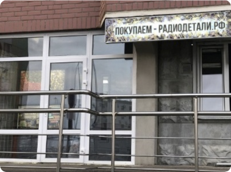

<div class="mod-map">
    <div class="map_bubble open">
        <div class="close"></div>
        <div class="wrapper">
            <div class="pic"></div>
        </div>
    </div>
    <div id="map"></div>
</div>

<script src="https://api-maps.yandex.ru/2.1?apikey=f84cdad7-7494-48e5-9737-c63faf7d970d&load=package.full&lang=ru_RU">
</script>
<script type="text/javascript">
    ymaps.ready(function () {

        var sites = [
            ['Москва', 55.579938826718134, 37.598032975882674, 1, '<div class="pic"></div>'],
        ];
        var myMap = new ymaps.Map("map", {
            center: [55.580105, 37.598158],
            controls: ['zoomControl','routeButtonControl', 'geolocationControl'],
            zoom: 19
        });

        var myPlacemark = new ymaps.Placemark([55.580105, 37.598158], {}, {
            iconLayout: 'default#image',
            iconImageHref: 'http://localhost:3000/img/marker.png',
            iconImageSize: [34, 50],
            iconImageOffset: [-3, -42]
        });

        // Размещение геообъекта на карте.

        myMap.geoObjects.add(myPlacemark);


        myPlacemark.events.add('click', function () {
            jQuery('.map_bubble .wrapper').html(sites[0][4]).parent().addClass('open');
        });

    });


</script>
